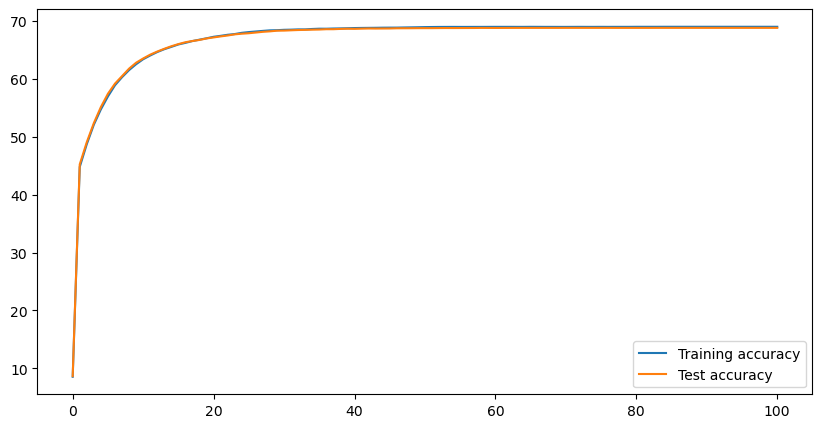

import numpy as np
%matplotlib inline
import matplotlib.pyplot as plt
from mpl_toolkits.mplot3d import Axes3D
# Scikit-learn utils
from sklearn.model_selection import train_test_split
from sklearn.datasets import make_classification
from sklearn.metrics import confusion_matrix, classification_report, roc_curve, auc, ConfusionMatrixDisplay
from sklearn.decomposition import PCA
import torch
import torch.nn as nn
import torch.nn.functional as F
from torch.utils.data import Dataset, DataLoader
class Data(Dataset):
def __init__(self, X, y):
self.data = torch.from_numpy(X.astype(np.float32))
self.labels = torch.from_numpy(y.astype(np.float32))
def __len__(self):
return len(self.data)
def __getitem__(self, idx):
return self.data[idx], self.labels[idx]
n_classes = 10
X, y = make_classification(n_samples=50000,
n_classes=n_classes,
n_features=10,
n_informative=10,
n_redundant=0,
n_repeated=0,
random_state=15
)
y_oh = np.eye(n_classes)[y]
pca = PCA(n_components=2)
X_2d = pca.fit_transform(X)
X_train, X_test, y_train, y_test = train_test_split(X, y_oh, test_size=0.50, shuffle=False)
data = Data(X, y_oh)
training_data = Data(X_train, y_train)
test_data = Data(X_test, y_test)
train_dataloader = DataLoader(training_data, batch_size=64)
test_dataloader = DataLoader(test_data, batch_size=64)
device = "cuda" if torch.cuda.is_available() else "cpu"
print(f"Using {device} device")
Using cuda device
# Define model
class NeuralNetwork(nn.Module):
def __init__(self):
super().__init__()
self.fc1 = nn.Linear(10, 128)
self.fc2 = nn.Linear(128, 128)
#self.fc3 = nn.Linear(256, 256)
self.fc4 = nn.Linear(128, 10)
self.dropout1 = nn.Dropout(0.2)
#self.dropout2 = nn.Dropout(0.2)
def forward(self, x):
x = self.fc1(x)
x = F.relu(x)
x = self.fc2(x)
x = F.relu(x)
x = self.dropout1(x)
#x = self.fc3(x)
#x = F.relu(x)
#x = self.dropout2(x)
logits = self.fc4(x)
return logits
def train(dataloader, model, loss_fn, optimizer, scheduler):
size = len(dataloader.dataset)
model.train()
for batch, (X, y) in enumerate(dataloader):
X, y = X.to(device), y.to(device)
# Compute prediction error
pred = model(X)
loss = loss_fn(pred, y)
# Backpropagation
loss.backward()
optimizer.step()
optimizer.zero_grad()
scheduler.step()
def test(dataloader, model, loss_fn):
size = len(dataloader.dataset)
num_batches = len(dataloader)
model.eval()
test_loss, correct = 0, 0
with torch.no_grad():
for X, y in dataloader:
X, y = X.to(device), y.to(device)
pred = model(X)
test_loss += loss_fn(pred, y).item()
correct += (pred.argmax(1) == y.argmax(1)).type(torch.float).sum().item()
test_loss /= num_batches
correct /= size
return 100*correct, test_loss
def display_losses(model, X_2d, training_data, test_data, loss_fn, epoch):
fig = plt.figure(figsize=(10,10))
ax = fig.add_subplot(111, projection='3d')
model.eval()
loss = []
for x, y in training_data:
x, y = x.to(device), y.to(device)
pred = model(x)
loss.append(loss_fn(pred, y).item())
loss = np.array(loss)
ax.scatter(X_2d[:512, 0], X_2d[:512, 1], loss[:], marker='x', alpha=0.6)
loss = []
for x, y in test_data:
x, y = x.to(device), y.to(device)
pred = model(x)
loss.append(loss_fn(pred, y).item())
loss = np.array(loss)
ax.scatter(X_2d[512:, 0], X_2d[512:, 1], loss[:], marker='.', alpha=0.6)
ax.view_init(elev=5,azim=30)
ax.set_zlim(0,4.0)
plt.savefig(f"individual_loss_{epoch}.png")
#plt.show()
plt.close()
def display_classification_probabilities(model, data, epoch):
model.eval()
with torch.no_grad():
pred_t = F.softmax(model(data[5864][0].to(device)), dim=0).to("cpu").numpy()
pred_o = F.softmax(model(data[25258][0].to(device)), dim=0).to("cpu").numpy()
fig = plt.figure(figsize=(10,5))
plt.bar(np.arange(10), pred_t)
plt.ylim(0,1)
plt.savefig(f"training_data_proba_{epoch}.png")
plt.close()
# fig = plt.figure(figsize=(10,5))
# plt.bar(np.arange(10), pred_o)
# plt.ylim(0,1)
# plt.savefig(f"testing_data_proba_{epoch}.png")
# plt.close()
#plt.show()
model = NeuralNetwork().to(device)
print(model)
loss_fn = nn.CrossEntropyLoss()
optimizer = torch.optim.SGD(model.parameters(), lr=1e-2)
scheduler = torch.optim.lr_scheduler.ExponentialLR(optimizer, gamma=0.9)
NeuralNetwork(
(fc1): Linear(in_features=10, out_features=128, bias=True)
(fc2): Linear(in_features=128, out_features=128, bias=True)
(fc4): Linear(in_features=128, out_features=10, bias=True)
(dropout1): Dropout(p=0.2, inplace=False)
)
epochs = 100
train_accs = []
train_losses = []
test_accs = []
test_losses = []
train_acc, train_loss = test(train_dataloader, model, loss_fn)
test_acc, test_loss = test(test_dataloader, model, loss_fn)
train_accs.append(train_acc)
train_losses.append(train_loss)
test_accs.append(test_acc)
test_losses.append(test_loss)
#display_losses(model, X_2d, training_data, test_data, loss_fn, 0)
display_classification_probabilities(model, data, 0)
for t in range(epochs):
print(f"Epoch {t+1}\n-------------------------------")
train(train_dataloader, model, loss_fn, optimizer, scheduler)
train_acc, train_loss = test(train_dataloader, model, loss_fn)
test_acc, test_loss = test(test_dataloader, model, loss_fn)
train_accs.append(train_acc)
train_losses.append(train_loss)
test_accs.append(test_acc)
test_losses.append(test_loss)
#display_losses(model, X_2d, training_data, test_data, loss_fn, t+1)
display_classification_probabilities(model, data, t+1)
print("Done!")
Epoch 1
-------------------------------
Epoch 2
-------------------------------
Epoch 3
-------------------------------
Epoch 4
-------------------------------
Epoch 5
-------------------------------
Epoch 6
-------------------------------
Epoch 7
-------------------------------
Epoch 8
-------------------------------
Epoch 9
-------------------------------
Epoch 10
-------------------------------
Epoch 11
-------------------------------
Epoch 12
-------------------------------
Epoch 13
-------------------------------
---------------------------------------------------------------------------
KeyboardInterrupt Traceback (most recent call last)
Cell In[11], line 17
15 for t in range(epochs):
16 print(f"Epoch {t+1}\n-------------------------------")
---> 17 train(train_dataloader, model, loss_fn, optimizer, scheduler)
18 train_acc, train_loss = test(train_dataloader, model, loss_fn)
19 test_acc, test_loss = test(test_dataloader, model, loss_fn)
Cell In[6], line 4, in train(dataloader, model, loss_fn, optimizer, scheduler)
2 size = len(dataloader.dataset)
3 model.train()
----> 4 for batch, (X, y) in enumerate(dataloader):
5 X, y = X.to(device), y.to(device)
7 # Compute prediction error
File ~\AppData\Local\Programs\Python\Python311\Lib\site-packages\torch\utils\data\dataloader.py:708, in _BaseDataLoaderIter.__next__(self)
705 if self._sampler_iter is None:
706 # TODO(https://github.com/pytorch/pytorch/issues/76750)
707 self._reset() # type: ignore[call-arg]
--> 708 data = self._next_data()
709 self._num_yielded += 1
710 if (
711 self._dataset_kind == _DatasetKind.Iterable
712 and self._IterableDataset_len_called is not None
713 and self._num_yielded > self._IterableDataset_len_called
714 ):
File ~\AppData\Local\Programs\Python\Python311\Lib\site-packages\torch\utils\data\dataloader.py:764, in _SingleProcessDataLoaderIter._next_data(self)
762 def _next_data(self):
763 index = self._next_index() # may raise StopIteration
--> 764 data = self._dataset_fetcher.fetch(index) # may raise StopIteration
765 if self._pin_memory:
766 data = _utils.pin_memory.pin_memory(data, self._pin_memory_device)
File ~\AppData\Local\Programs\Python\Python311\Lib\site-packages\torch\utils\data\_utils\fetch.py:55, in _MapDatasetFetcher.fetch(self, possibly_batched_index)
53 else:
54 data = self.dataset[possibly_batched_index]
---> 55 return self.collate_fn(data)
File ~\AppData\Local\Programs\Python\Python311\Lib\site-packages\torch\utils\data\_utils\collate.py:398, in default_collate(batch)
337 def default_collate(batch):
338 r"""
339 Take in a batch of data and put the elements within the batch into a tensor with an additional outer dimension - batch size.
340
(...) 396 >>> default_collate(batch) # Handle `CustomType` automatically
397 """
--> 398 return collate(batch, collate_fn_map=default_collate_fn_map)
File ~\AppData\Local\Programs\Python\Python311\Lib\site-packages\torch\utils\data\_utils\collate.py:211, in collate(batch, collate_fn_map)
208 transposed = list(zip(*batch)) # It may be accessed twice, so we use a list.
210 if isinstance(elem, tuple):
--> 211 return [
212 collate(samples, collate_fn_map=collate_fn_map)
213 for samples in transposed
214 ] # Backwards compatibility.
215 else:
216 try:
File ~\AppData\Local\Programs\Python\Python311\Lib\site-packages\torch\utils\data\_utils\collate.py:212, in <listcomp>(.0)
208 transposed = list(zip(*batch)) # It may be accessed twice, so we use a list.
210 if isinstance(elem, tuple):
211 return [
--> 212 collate(samples, collate_fn_map=collate_fn_map)
213 for samples in transposed
214 ] # Backwards compatibility.
215 else:
216 try:
File ~\AppData\Local\Programs\Python\Python311\Lib\site-packages\torch\utils\data\_utils\collate.py:155, in collate(batch, collate_fn_map)
153 if collate_fn_map is not None:
154 if elem_type in collate_fn_map:
--> 155 return collate_fn_map[elem_type](batch, collate_fn_map=collate_fn_map)
157 for collate_type in collate_fn_map:
158 if isinstance(elem, collate_type):
File ~\AppData\Local\Programs\Python\Python311\Lib\site-packages\torch\utils\data\_utils\collate.py:272, in collate_tensor_fn(batch, collate_fn_map)
270 storage = elem._typed_storage()._new_shared(numel, device=elem.device)
271 out = elem.new(storage).resize_(len(batch), *list(elem.size()))
--> 272 return torch.stack(batch, 0, out=out)
KeyboardInterrupt:
fig = plt.figure(figsize=(10,5))
plt.plot(train_accs, label='Training accuracy')
plt.plot(test_accs, label='Test accuracy')
plt.legend()
plt.show()
plt.close()
fig = plt.figure(figsize=(10,5))
plt.plot(train_losses, label='Training loss')
plt.plot(test_losses, label='Test loss')
plt.legend()
plt.show()
plt.close()


display(test(train_dataloader, model, loss_fn))
display(test(test_dataloader, model, loss_fn))
(69.0, 0.9598677371773878)
(68.812, 0.9625589487802647)
pred = model(training_data[0][0].to(device))
plt.bar([0,1], F.softmax(pred, dim=0).to("cpu").detach())
plt.show()